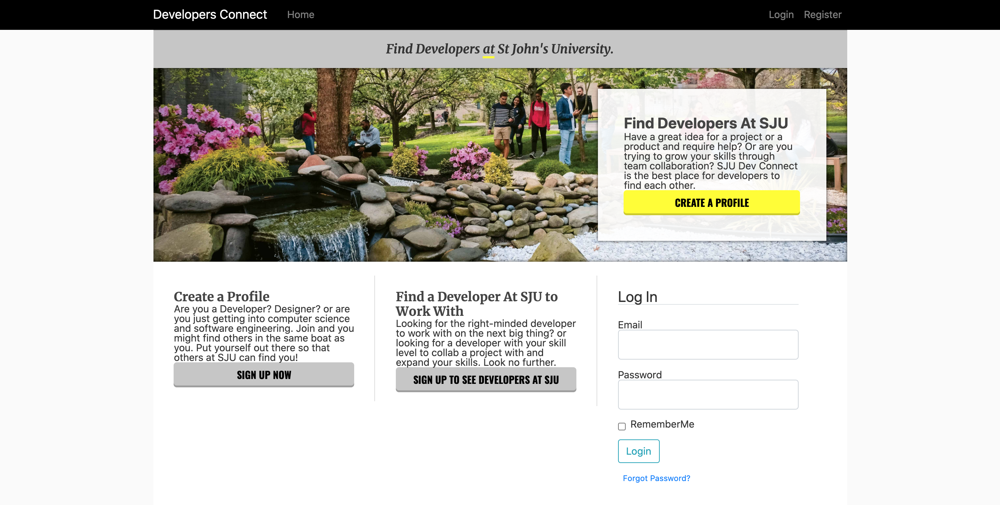
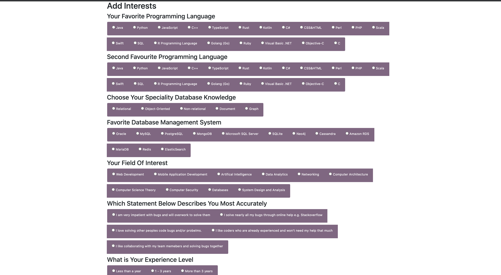
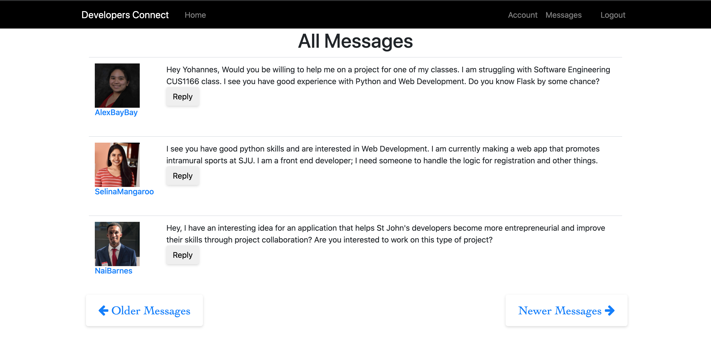

Are you a student at SJU? Do you have a great idea for a project or product and require help?
Or are you trying to grow your skills through project collaboration? SJU Dev Connect is the best place for developers to find each other.
Dev-Connect is a matchmaking application for student developers at SJU. Student developers register with their details and their qualities and interests, such as favorite programming language, current field of interest, database skill and more.
After they have registered, they have a view of all aspiring developers at SJU. Developers/Users can:
Dev-Connect was created to encourage entrepreneurship and development of programming skills through real word projects built with other students that have similar or varied skills at St John's University.The number of computer science students at SJU isn't that high compared to other majors. This project had the sole goal of connecting developers together at a campus with not many developers.
At the launch of this application/project, I had 12 people sign up after I presented it to my software engineering class.. It couldn't grow after that for a variety of reasons (no specific domain; it was hosted on pythonanywhere, lacked quality in the user interface. I am primarily a backend web developer. plus other failures)
This project was developed using Python, Flask, SQLite and JS.